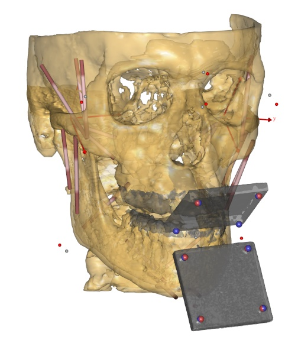

The Aalborg mandible¶
This is a mandible model based on a CT scan of a 40 year old male.
The model was developed for two purposes:
Demonstration of how to apply force-dependent kinematics (FDK) for modeling of the temporomandibular joint (TMJ)
Validation of the predicted mandible kinematics with the FDK TMJ model and comparison to a simpler point-on-plane (POP) model.
You can read more about this model and the validation in [AZDN17]
The work was supported by the Sapere Aude program of the Danish Council for Independent Research under grant number: DFF‐4184‐00018.
See also
The Aalborg Mandible model for an example of how the model is used.
References
- AZDN17
Andersen MS, de Zee M, Damsgaard M, Nolte D, Rasmussen J. 2017. Introduction to Force-dependent Kinematics: Theory and Application to Mandible Modeling. Journal of Biomechanical Engineering, 139(9), 091001. DOI: 10.1115/1.4037100.